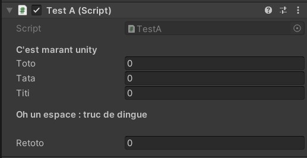
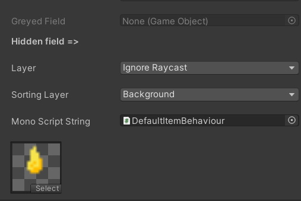
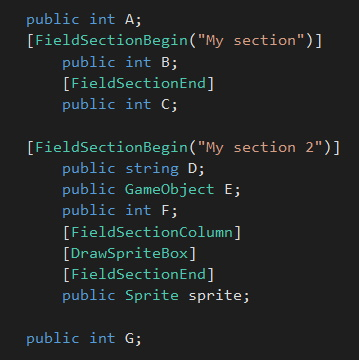
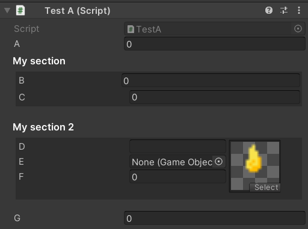
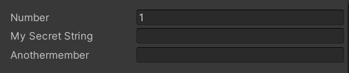
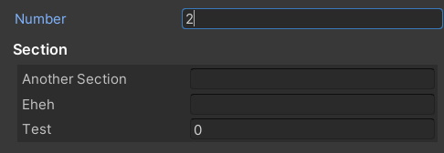
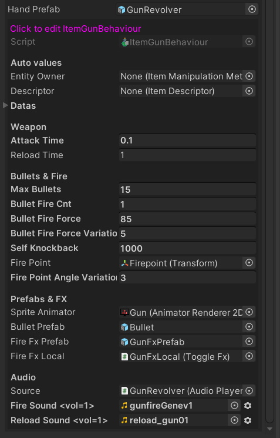

Notes : ⚠️ Cette section n'est pas à jour.
Des attributs sympa
[Utilise Logiked_Source]
Unity et les monobehaviour ca à l'air cool. Vous pouvez mettre des attributs sur vos champs, et l'inspecteur organise différement le résultat à l'écran.
[Header("C'est marant unity")]
public int toto;
public int tata;
public int titi;
[Space(20)]
[Header("Oh un espace : truc de dingue")]
public int retoto;
Le résultat est kiffant :

A noter
C'est marrant 5 minutes les Attributs d'affichage, mais dés que vous commencez a avoir plusieurs attributs décorateurs/custom sur un même champs, ca commence a devenir infernal... Vous vous retrouver avec des question genre
- Quel attribut doit dessiner le champ ? Je peux laisser la main à Unity ?
- Dans quel ordre j'affiche mes attributs ?
- Il faut vraiment définir un attribut puis son Drawer pour chaque fichier ? C'est relou on s'y perd.
La solution du Ked - Partie tuto
A partir de maintenant, faites heriter tout vos attributs de la classe @"logiked.source.attributes.root.BetterFieldAttribute" si c'est un modifieur de champ et @"logiked.source.attributes.root.BetterDecoratorAttribute" si c'est un attribut décorateur.
Ajoutez quelques UNITY_EDITOR et vous obtenez ceci comme base:
using logiked.source.attributes;
using UnityEngine;
#if UNITY_EDITOR
using UnityEditor;
using logiked.editor;
#endif
public class TestA : BetterFieldAttribute
{
//Champs
#if UNITY_EDITOR
public override void OnGUI(Rect position, SerializedProperty property, GUIContent label)
{
//Votre code d'affichage
property.DrawPropertyField(label);
}
#endif
}
Ca a l'air indigeste, mais ne vous inquietez pas, c'est maintenable et ca marche super. Promis.
Notes :
property.DrawPropertyField(label) c'est une extention qui cherche le meilleur drawer custom pour la propriété et qui le dessine à l'écran. Ca fonctionne mieux que EditorGUILayout.PropertyField(), qui se contente de prendre le Drawer unity de base.
Les @"logiked.source.attributes.root.BetterDecoratorAttribute" sont des propriétés décoratives et ne doivent pas dessiner le champs (ou vous risquez simplement d'avoir des doublons dans votre inspector)
A l'implémentation d'un @"logiked.source.attributes.root.BetterDecoratorAttribute", vous êtes obligé de spécifier si votre attribut se dessine avant ou aprés votre champ.
Dans votre OnGui vous pouvez à tout moment écrire
breakRender = true;, qui stopera l'execution des autres attributs.Vous pouvez aussi override la méthode
GetPropertyHeightafin de définir une taille que prendra chacun de vos attributs.
La solution du Ked - Ce qui a été dev
Modificateurs de base
GreyedField permet de griser un champs
HideInNormalInspectorAttribute permet de ne pas afficher un champ dans l'inspector, même si il est publique ou sérialisé.
LayerAttribute permet d'afficher un entier en une liste de layer mask.
SortingLayerAttribute permet d'associer un entier a un SortingLayer.
MonoScriptAttribute permet d'assigner une chaine de caractère grâce a un monobehaviour. On peut même restreinde les types assignables au champ.
DrawSpriteBox permet d'afficher un champ de sprite en forme rectangulaire plus visuelle.
Exemple de ces attributs :

Décorateurs sections
Les décorarateurs FieldSectionBegin, FieldSectionEnd servent à génerer des sections.
FieldSectionColumn permet de rajouter une colonne à une section.
Ainsi ce code : 
Donne cette organisation :

Show IF
ShowIfAttribute permet d'afficher (ou non) des champs selon une comparaison.
[ShowIf("Number", ShowIfOperations.Equal, 1)]
public string MySecretString;//Affiché seulement si Number == 1
[ShowIf(ShowIfRepeatMode.Same)]
public string Anothermember;//Pareil
//Toute la suite est affichée si Number != 1
[ShowIf(ShowIfRepeatMode.NotSame)]
[FieldSectionBegin("Section")]
public string AnotherSection;
[ShowIf(ShowIfRepeatMode.NotSame)]
public string eheh;
[ShowIf(ShowIfRepeatMode.NotSame)]
[FieldSectionEnd]
public int test;
Résultat :


Notes : Le premier paramèetre de show if peut aussi chercher des valeurs de propriétés (todo:bientot des fonctions) au travers de plusieurs objets. Par exemple "champ1.propiété1.transform.position.x" est normalement une syntaxe correcte pour le paramètre.
Utils
RealtimeEditComponent se place sur un GameObject et permet de visualiser et d'éditer un composant d'un type particulier dessus. Ici on edit le composant ItemGunBehaviour sur le prefab GunRevolver.
